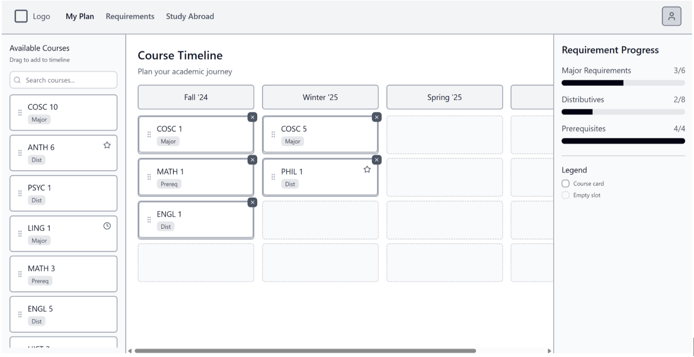
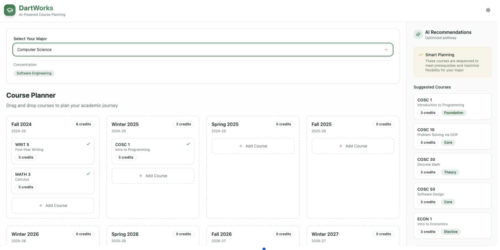
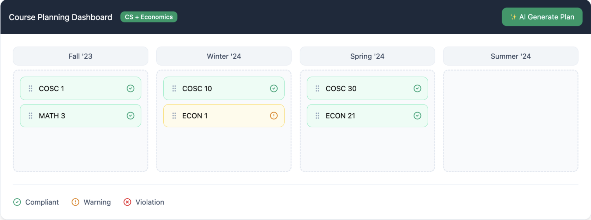

DartActuallyWorks consolidates scattered degree-planning information into one unified, feedback-rich interface — replacing DartWorks for Dartmouth students.
Students must stitch together information from the Registrar website, individual department pages, DartHub, and DartWorks — each showing only a fragment of what's needed to build a valid four-year plan. Dartmouth's unique D-Plan off-term system, modified major options, and study abroad opportunities add complexity that existing tools completely ignore.
The result: students miss prerequisites, make plan errors they discover too late, and default to building handmade spreadsheets just to get a complete picture.
"The Registrar tells me what I need for my major, not how to actually do it."
We surveyed 75 Dartmouth undergraduates across all class years (2026–2029) and conducted 15 semi-structured interviews exploring pain points, tool usage, and desired features. Four themes emerged consistently.
70% rated satisfaction at 3/5 or below. Common words: "stressful," "confusing," "more annoying than it needs to be."
DartWorks lists requirements but offers no sequencing help for prerequisites, term availability, or double-counting detection.
Every interviewee used Google Sheets or Excel — manual, error-prone, and disconnected from live course data.
Participants asked for auto-population of completed courses, live requirement tracking, and real-time violation alerts.
"The system already knows my classes from DartHub — why am I manually populating everything? It should put it in and tell me what options there are for other terms."
Every design decision is grounded in specific HCI principles to reduce extraneous cognitive load and minimize user error — not just aesthetics.
Primary buttons use 6–8px padding. "Add Course" sits directly adjacent to search results. Full-width modal buttons reduce pointer travel. Estimated 15–25% reduction in task completion time for common actions.
Navigation labels simplified to concise alternatives. "Step X of 5" onboarding progress bar builds accurate mental models. Adding a course now takes 2–3 clicks vs. 4–5 previously — roughly 20% throughput improvement.
Prerequisites validated automatically with visual indicators. A persistent sidebar keeps requirements always visible — recognition over recall. Dartmouth Green (#00693e) signals completion consistently throughout the UI.
The web application centralizes all degree-planning into a single interactive interface with three panels: requirement tracking on the left, drag-and-drop scheduling in the center, and AI recommendations with violation alerts on the right.



We evaluated using an adapted System Usability Scale (SUS). Our target was 80 — the threshold for "good" usability. We exceeded it significantly.
Median score 97.5. Scores ranged from 67.5 to 100 across 35 participants. Our target was 80 — we exceeded it by over 12 points. Question 1 (preference over DartWorks) received the highest contribution of any question.
Q1 (preference over DartWorks) scored highest. Q2 (complexity) scored lowest — an area for future refinement.
strongly agreed they would prefer DartActuallyWorks over the current DartWorks system
agreed most people would learn to use the system very quickly
strongly disagreed that the system was cumbersome to use
found the system easy to use and functions well integrated
Qualitative feedback consistently highlighted improved clarity, reduced cognitive effort, and the value of seeing all planning information in one place. Graduate students noted they wished a tool like this had existed during their own undergraduate years.